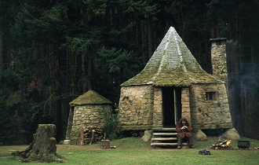

禁林和海格小屋（The Forest and Hagrid's cabin）
霍格沃茨魔法学校由四位伟大的巫师和女巫创立于约公元10世纪：戈德里克·格兰芬多（Godric Gryffindor）、赫尔加·赫奇帕奇（Helga Hufflepuff）、罗伊纳·拉文克劳（Rowena Ravenclaw）和萨拉查·斯莱特林（Salazar Slytherin）。他们共同建立了这座学校，以教育年轻的巫师和女巫，教授他们掌握和运用魔法的技能。
最初，这四位创始人合作无间，但后来由于萨拉查·斯莱特林希望学校只招收纯血统巫师，与其他三位创始人产生了严重分歧。最终，他离开了霍格沃茨，但在离开之前，他秘密建造了密室，并留下了一只蛇怪，用以清除他认为“不配学习魔法”的学生。这一秘密在许多年后才被揭开。
霍格沃茨的历史充满了奇幻与传说，许多著名的巫师和女巫都曾在此学习，例如阿不思·邓布利多和黑魔王伏地魔（汤姆·里德尔）。同时，霍格沃茨也是魔法界抗击黑暗势力的重要中心之一，例如在哈利·波特的时代，这里成为对抗伏地魔的最后阵地。
霍格沃茨的教育内容丰富多样，包括魔法史、魔药学、变形术、黑魔法防御术、占卜术等课程，旨在培养学生的魔法技能和综合素养。学校还以其各种神秘和奇幻的元素著称，比如有活灵活现的画像、会移动的楼梯，以及禁止进入的禁林。